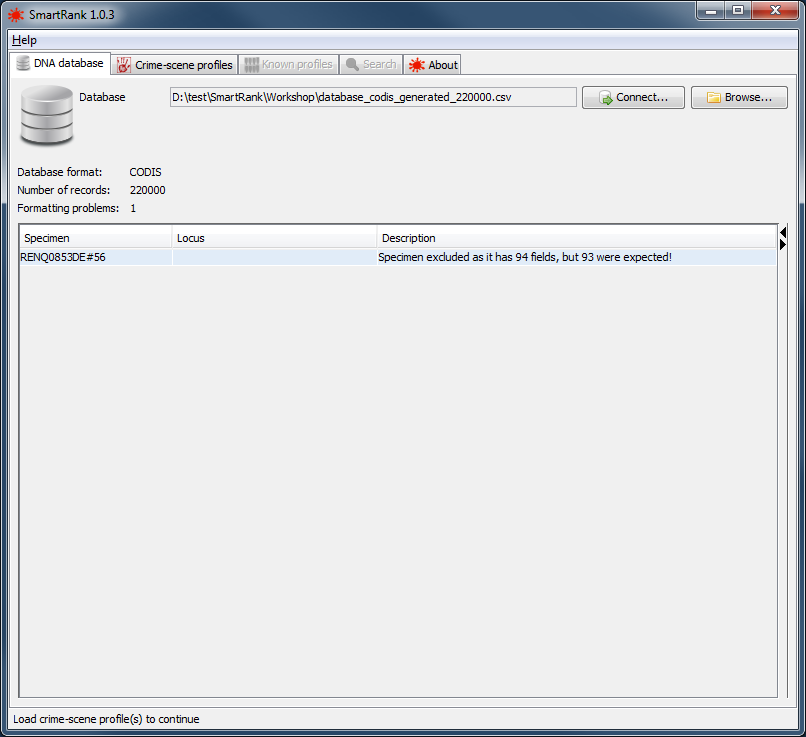

Loading or connecting to the database Back to top
The first step of using SmartRank is to load the database containing the candidate profiles. The database can be loaded on the DNA database tab. Any format problems will be displayed in the table at the bottom of the panel. Details of which specimen, locus and cause of the problem can be viewed here. Continuing with format problems still present will result in the problematic locus or specimen - depending on the nature of the problem - being excluded from the analysis.
the database tab |
The DNA database can be read from a file or from a direct database connection.
Reading from a CSV file Back to top
The DNA database can be read from a CSV file. See DatabaseFormat for more information on the expected contents of the CSV file. Click the Browse... button. to select a database file.CODIS users, please see DatabaseExport for the SQL query can be used to export the specimens to a suitable format.
|  |
a successfully loaded database with a single formatting error |
Reading specimens through a direct database connection Back to top
SmartRank has the capability to connect directly Microsoft SQLServer, SAP Adaptive Server Enterprise or H2 databases. On the Database tab, click the Connect... button to bring up the Database Settings screen on which you can review or configure the connection to the database.
 |
the Database Settings dialog |
On this screen the following settings can be made:
| Setting | Description |
|---|---|
| Database Type | The type of DBMS that is used for the DNA database. Supported types are SQLServer, Sybase and H2. |
| Host:Port | The network address and port of the database server. |
| Database Name | The schema name of the DNA database. |
| Username | The username under which to log in. |
| Password | The password for logging in to the database. |
| Save Password | Indicates whether the password is to be stored in the configuration file. IMPORTANT NOTE: the storage of the password is in no way secure! Only use this option if the machine SmartRank runs on is in a trusted environment. |
| Specimen Keys Query | The query to be executed in order to obtain a list of all eligible specimens in the database. |
| Specimen Retrieval Batch Size | This value indicates how many specimens are to be retrieved from the database in one go. This can be set to 0 to retrieve all specimens, but this may have adverse effects on the responsiveness of SmartRank while specimens are being retrieved! |
| Specimen Retrieval Query | The query to be executed in order to obtain the data for some or all of the specimens in the database. |
| Database Revision Query | The query to be executed in order to obtain a value that uniquely identifies the current state of the database. |
If the settings are not correct, an error is shown just below the Sample Query box. An example is shown below:
example of an error message in the Database Settings dialog |
- Before each search, the Database Revision Query is run to detect changes in the database since the last validation. If changes are detected, the database is re-validated before the search is executed. Note that this query is optional. If it is not configured, the database will not be re-validated and changes (particularly newly added records) will not be detected.
- The Specimen Keys Query is executed to obtain a list of unique keys (identifying values) for all specimens that qualify for a SmartRank search
- For each batch, as configured by the Specimen Retrieval Batch Size value, the Specimen Retrieval Query is run to get the actual specimen data.
The Database Revision Query Back to top
This query obtains a value that identifies the current state of the database, so that changes to can be detected at a future time. An example of this is the identifier (key) of the latest Audit Trail record in the CODIS datamodel. Since not all databases and datamodels may have a way of getting this value, the query is optional.Expected properties of the query
In order for the results of the query to be understood correctly be SmartRank, the results of the query must meet the following criteria:- The query must return a single column in its result
- Only the first row of the result is used. If more rows are returned, they are ignored.
- Any type of data can be returned (VARCHAR, INT etc).
The Specimen Keys Query Back to top
This query obtains a list of keys for all specimens in the database that qualify as candidates for a SmartRank search. The query is executed once before every search.Expected properties of the query
In order for the results of the query to be understood correctly be SmartRank, the results of the query must meet the following criteria:- The result of the query must be a single column.
- Results must be grouped by specimen.
The Specimen Retrieval Query Back to top
This query returns the actual content of specimens.Expected properties of the query
In order for the results of the query to be understood correctly be SmartRank, the results of the query must meet the following criteria:- The result of the query must be at least 3 columns. The order of the columns is not important, but the names of these columns must be 'specimenId', 'locus' and 'allele'. If the result set holds more columns, statistics will be kept on the number of distinct values returned. The report and logfile will contain a table listing the values and the number of occurrences for each value.
- The alleles for a locus can be returned in a single row - by separating the allele values with spaces in the allele column - or by returning a row for each allele value.
- The query can contain 2 '?' placeholders that will be replaced by the first and last ID of a batch of specimens to retrieve.
- Results must be grouped by specimen.
Examples
| SpecimenId | locus | allele |
|---|---|---|
| ID-1 | vWA | 11 |
| ID-1 | vWA | 12 |
| ID-1 | FGA | 13.2 |
| ID-1 | FGA | 14 |
| ID-2 | vWA | 8 |
| ID-2 | vWA | 12 |
| ID-2 | FGA | 17 |
| ID-2 | FGA | 18 |
| SpecimenId | locus | allele | Specimen Type |
|---|---|---|---|
| ID-1 | vWA | 11 | Convicted Offender |
| ID-1 | vWA | 12 | Convicted Offender |
| ID-1 | FGA | 13.2 | Convicted Offender |
| ID-1 | FGA | 14 | Convicted Offender |
| ID-2 | vWA | 8 | Missing Person |
| ID-2 | vWA | 12 | Missing Person |
| ID-2 | FGA | 17 | Missing Person |
| ID-2 | FGA | 18 | Missing Person |
| ID-3 | vWA | 8 | Convicted Offender |
| ID-3 | vWA | 12 | Convicted Offender |
| ID-3 | FGA | 17 | Convicted Offender |
| ID-3 | FGA | 18 | Convicted Offender |
| Specimen Type | |
|---|---|
| Convicted Offender | 2 |
| Missing Person | 1 |
The following result set is valid. Alleles for a locus are returned in a single row, the values separated by spaces.
| SpecimenId | locus | allele |
|---|---|---|
| ID-1 | vWA | 11 12 |
| ID-1 | FGA | 13.2 14 |
| ID-2 | vWA | 8 12 |
| ID-2 | FGA | 17 18 |
| SpecimenId | locus | allele |
|---|---|---|
| ID-1 | vWA | 11 |
| ID-2 | vWA | 8 |
| ID-1 | vWA | 12 |
| ID-2 | vWA | 12 |
| ID-1 | FGA | 13.2 |
| ID-2 | FGA | 17 |
| ID-1 | FGA | 14 |
| ID-2 | FGA | 18 |
The following result set is invalid. The column names are not the ones recognized by SmartRank.
| RecordName | Marker | PCR Value |
|---|---|---|
| ID-1 | vWA | 11 12 |
| ID-1 | FGA | 13.2 14 |
| ID-2 | vWA | 8 12 |
| ID-2 | FGA | 17 18 |